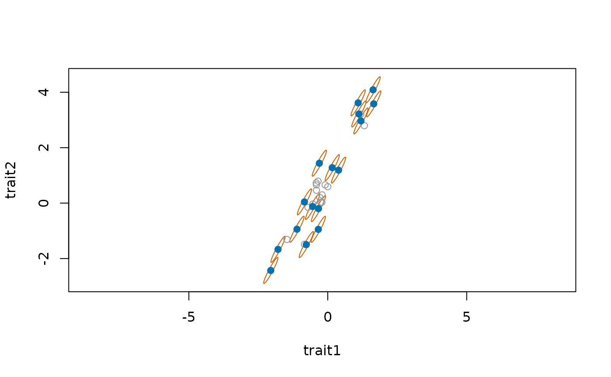

Static community assembly, without population dynamics, following Kraft et
al. (2007). Species are removed from the pool one at a time until the
community has size species (or until the optional distance end point is
reached):
Arguments
- traits
Numeric vector (one trait) or matrix (one column per trait), with species names as names or row names. For example, the output of
trait_ou().- size
Number of species in the local community.
- rule
Assembly rule.
- optimum
For
rule = "filtering": the niche optimum, either"ancestral"(the root state, 0 by default intrait_ou()),"derived"(the maximum of each trait in the pool, one extreme corner of trait space), or a numeric vector with one value per trait.- min_distance
For
rule = "limiting_similarity": optional end point. Removal stops as soon as no two remaining species are closer than this (a limit to similarity), even if more thansizespecies remain. In the units ofdistance.- distance
How to measure distances in trait space:
"euclidean","standardized"or"mahalanobis"; see Details.- trait_cov
For
distance = "mahalanobis", an optional covariance matrix of the traits, one row and column per trait, used instead of the covariance in the pool.- x
An
mc_assemblyobject fromassemble_community().- ...
Not used.
Value
An mc_assembly object: a list with community (names of the species kept),
removed (names of the species removed, in order of removal), the rule, distance and
optimum (for filtering) used, the traits of the pool as a matrix, and metric, the
matrix \(S\) of the distances, \(\sqrt{(x - y)^\top S^{-1} (x - y)}\) (the identity for Euclidean distances). plot_assembly() draws it in trait
space.
Details
"limiting_similarity": the GAUSE algorithm of Colwell & Winkler (1984), direct competition followed by diffuse competition. The pair of species closest in trait space is found and, of the two, the species with the smaller sum of distances to all remaining species (the greater "diffuse similarity") is removed. The process is repeated on the remaining species. Kraft et al. (2007) used this algorithm for their limiting similarity model."filtering": habitat filtering as in Kraft et al. (2007). The species farthest from a niche optimum in trait space are removed first."neutral": species are drawn at random, without regard to traits.
Several traits can be used at once (one column each); ties are broken at random. The
distance between species, and between a species and the optimum, is chosen by distance:
"euclidean"(the default, as in Kraft et al. 2007): distances in the units of the traits, so a trait with a larger spread weighs more."standardized": Euclidean distance on traits divided by their standard deviation in the pool, so each trait weighs the same whatever its units."mahalanobis": Euclidean distance after removing the correlations between traits, \(\sqrt{(x - y)^\top S^{-1} (x - y)}\), with \(S\) the covariance matrix of the traits in the pool, ortrait_cov. In the filter, removing species by decreasing Mahalanobis distance to the optimum is removing them by increasing value of a multivariate Gaussian niche with covarianceScentred on the optimum (Mahalanobis 1936, reprinted 2018).
The choice is a statement about niche axes. With correlated traits, such as those of
trait_ou() with a rate matrix from rate_matrix(), Euclidean distances, standardised or
not, count the shared direction of variation more than once: two traits that measure one
niche axis double the weight of that axis. "mahalanobis" treats each independent
direction of variation as one axis, and is the better choice when the traits are
correlated because they reflect the same niche dimension; "standardized" is the better
choice when each trait is a distinct niche dimension whatever its correlation with the
others. With uncorrelated traits on the same scale the three give the same order of
removal. The pool covariance needs more species than traits; with few species, or to use
the covariance of the process that generated the traits (for example the rate matrix,
which is free of the phylogenetic dependence among species), pass it as trait_cov.
References
Colwell, R. K., & Winkler, D. W. (1984). A null model for null models in biogeography. In D. R. Strong, D. Simberloff, L. G. Abele, & A. B. Thistle (Eds.), Ecological Communities: Conceptual Issues and the Evidence (pp. 344–359). Princeton University Press. doi:10.1515/9781400857081.344
Kraft, N. J. B., Cornwell, W. K., Webb, C. O., & Ackerly, D. D. (2007). Trait evolution, community assembly, and the phylogenetic structure of ecological communities. The American Naturalist, 170, 271–283. doi:10.1086/519400
Mahalanobis, P. C. (2018). Reprint of: Mahalanobis, P. C. (1936) "On the generalised distance in statistics". Sankhya A, 80(Suppl. 1), 1–7. doi:10.1007/s13171-019-00164-5
See also
Other rule-based assembly:
plot_assembly()
Examples
set.seed(1)
tr <- treeshapesim::sim_tree_shape(32)
x <- trait_ou(tr, n_traits = 2)
assemble_community(x, size = 16, rule = "limiting_similarity")$community
#> [1] "t1" "t2" "t3" "t7" "t8" "t12" "t13" "t14" "t16" "t22" "t23" "t25"
#> [13] "t26" "t29" "t30" "t32"
assemble_community(x, size = 16, rule = "filtering", optimum = "derived")$community
#> [1] "t1" "t2" "t3" "t6" "t7" "t9" "t10" "t11" "t13" "t14" "t15" "t16"
#> [13] "t17" "t18" "t31" "t32"
# correlated traits: distances that discount the correlation
y <- trait_ou(tr, sigma2 = rate_matrix(c(1, 4), correlation = 0.9))
a <- assemble_community(y, size = 16, distance = "mahalanobis")
a
#> <mc_assembly> limiting_similarity with mahalanobis distances: 16 of 32 species kept
#> community: t3, t6, t8, t9, t11, t13, t16, t17, t18, t20 ...
plot_assembly(a)
